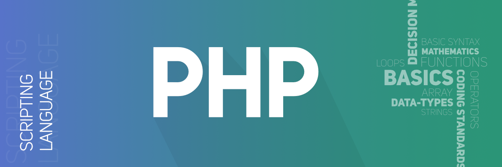

GeeksforGeeks
A Computer Science Portal for Geeks
Portfolio

HTML Tutorials
HTML stands for HyperText Markup Language. It is used to design web pages using the markup language. HTML is the combination of Hypertext and Markup...

CSS Tutorials
Cascading Style Sheets,fondly refered to as CSS, is a simply designed language intend to simplyfy the process of making web pages presentable .CSS...

PHP Tutorials
The term PHP is an acronym for PHP: Hypertext Preprocessor. PHP is a server-side scripting language designed specifically for web development.PHP...

Javascript Tutorials
Javascript was developed by Brendan Eich in 1995.At first,it was called LiveScript but was later name to Javascript.Javascript is the muscle of t...